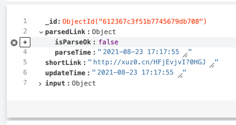
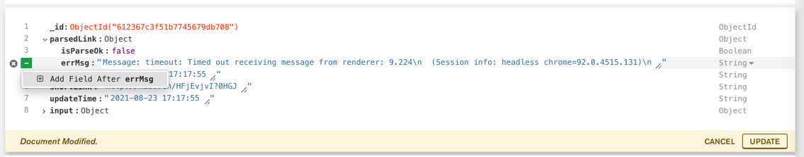
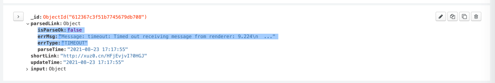
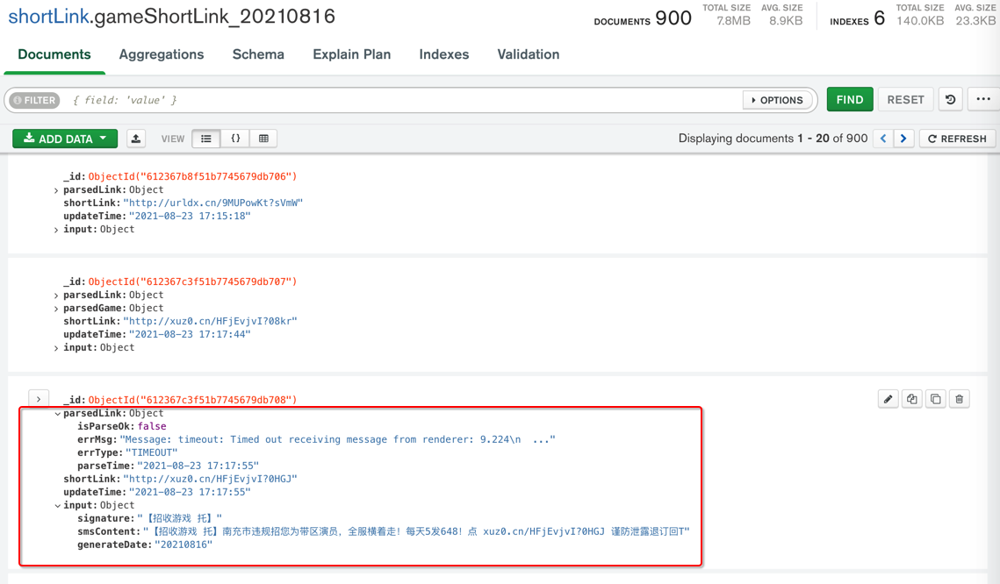
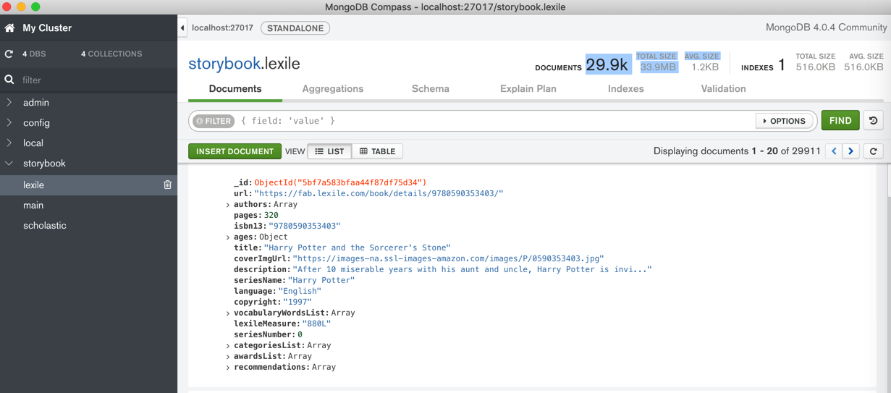
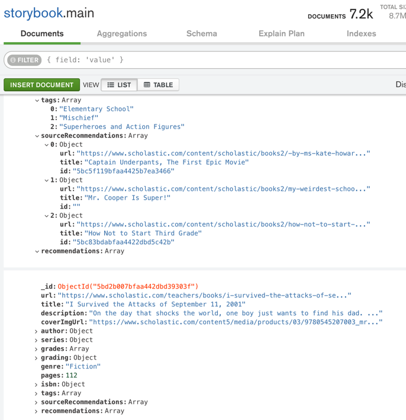

MongoDB Compass心得
好用之处
直接编辑内容
截图举例：

字段可以很方便的折叠和展开
点击每条记录前面的箭头：

即可展开所有字段：

再次点击，即可缩回。
编辑功能很好用
举例：
点击编辑：

或 双击字段的值，即可进入编辑模式
去编辑第三条数据，删除：parsedGame部分
鼠标移动到 改字段前面，点击 x 叉号：

再点击 右下角的 UPDATE，即可删除对应字段。
再去改 parsedLink中的值：
把parsedLink中的isParseOk从true，改为false
以及删除其他几个字段：

新增字段：
鼠标移动到要加的位置，点击 加号=➕：

显示Add Field after isParseOk，点击

新增了一项：

输入key和value值：
errMsg:Message: timeout: Timed out receiving message from renderer: 9.224\n (Session info: headless chrome=92.0.4515.131)\nerrType:TIMEOUT

继续添加其他字段：

点击UPDATE：

更新后的字段：

即可。
编辑后的数据的效果：

MongoDB Compass中拷贝值
点击右上角的 拷贝按钮：

即可拷贝出json数据：
{"_id":{"$oid":"612367c3f51b7745679db708"},"parsedLink":{"isParseOk":false,"errMsg":"Message: timeout: Timed out receiving message from renderer: 9.224\\n (Session info: headless chrome=92.0.4515.131)\\n","errType":"TIMEOUT","parseTime":"2021-08-23 17:17:55"},"shortLink":"http://xuz0.cn/HFjEvjvI?0HGJ","updateTime":"2021-08-23 17:17:55","input":{"signature":"【招收游戏 托】","smsContent":"【招收游戏 托】南充市违规招您为带区演员，全服横着走！每天5发648！点 xuz0.cn/HFjEvjvI?0HGJ 谨防泄露退订回T","generateDate":"20210816"}}
格式化后：
{
"_id": { "$oid": "612367c3f51b7745679db708" },
"parsedLink": {
"isParseOk": false,
"errMsg": "Message: timeout: Timed out receiving message from renderer: 9.224\\n (Session info: headless chrome=92.0.4515.131)\\n",
"errType": "TIMEOUT",
"parseTime": "2021-08-23 17:17:55"
},
"shortLink": "http://xuz0.cn/HFjEvjvI?0HGJ",
"updateTime": "2021-08-23 17:17:55",
"input": {
"signature": "【招收游戏 托】",
"smsContent": "【招收游戏 托】南充市违规招您为带区演员，全服横着走！每天5发648！点 xuz0.cn/HFjEvjvI?0HGJ 谨防泄露退订回T",
"generateDate": "20210816"
}
}
后记：放到VSCode，格式化后，效果：

其他实际使用效果举例

